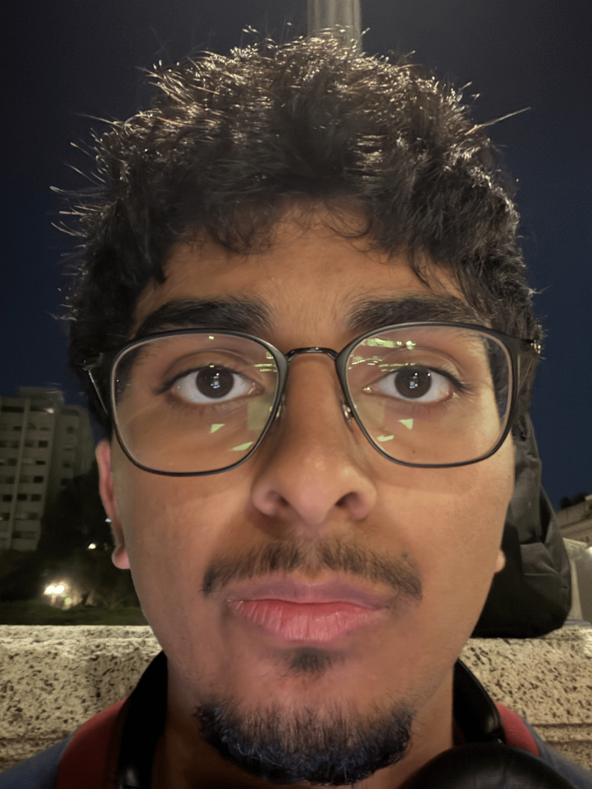
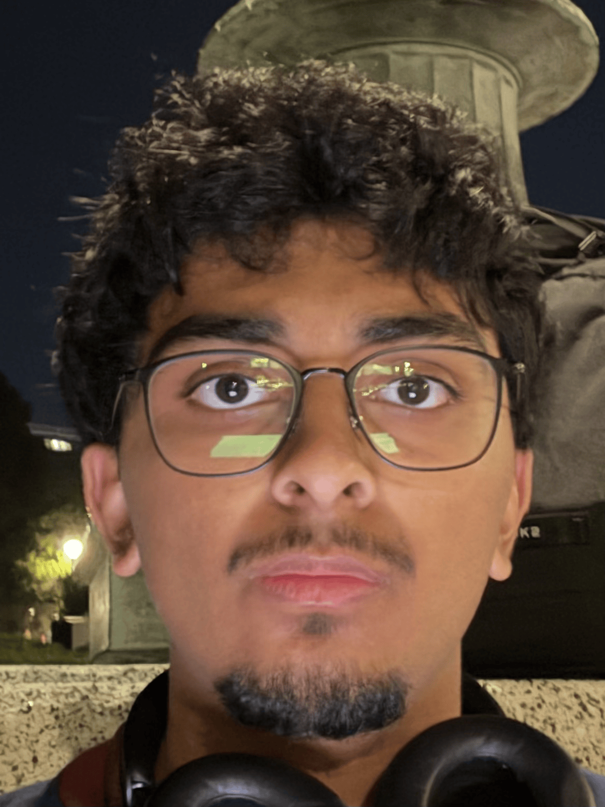
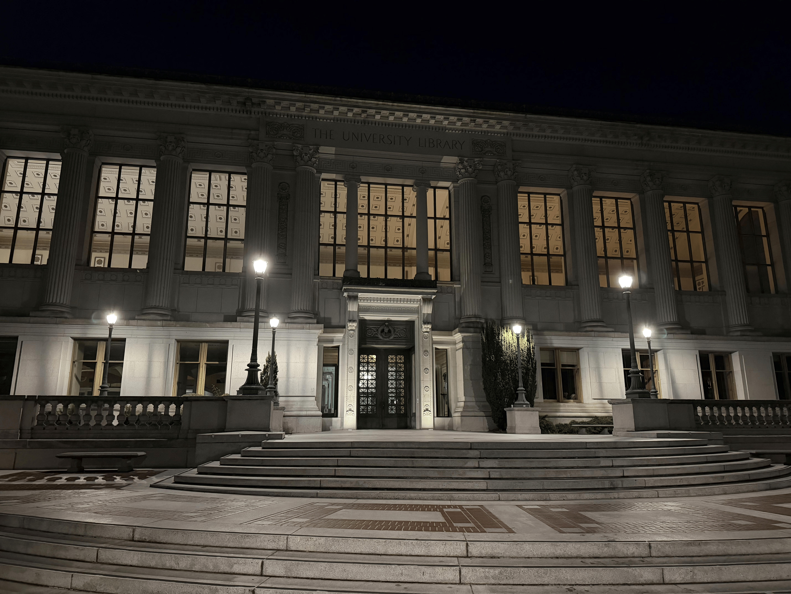
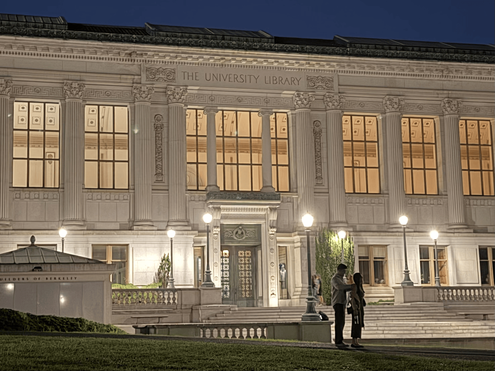

Coarsely, it seems that for a given camera configuration, when the camera is close to the subject, the angles formed by individual features to the camera are less parallel. As the camera moves further, these rays approach being parallel.
In the close configuration, rays at the perimeter are more parallel, and features there appear closer together. Rays near the center of the field of view are less parallel and therefore appear further apart.
In the far configuration, groups rays at the perimeter and center of the FOV are separated by very similar angles, so the observed distances between features are closer to their true distances and we see a less distorted view.
Note: Rather than stitching together only a few images, I tried to record the zoom (effectively simulating many many images, rather than just 4-8) for a smoother shot.